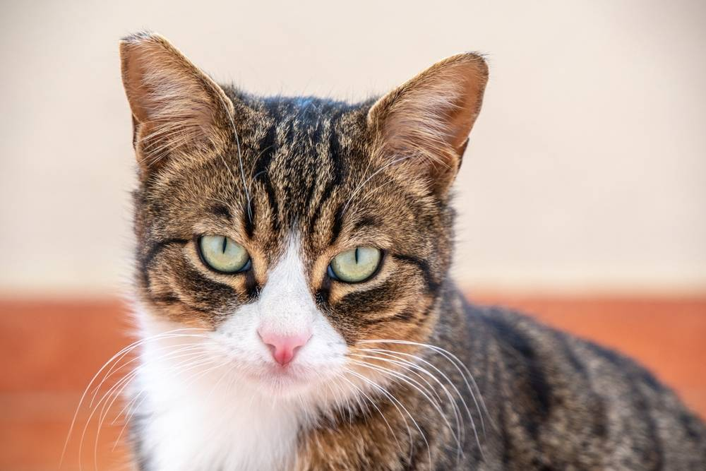

gerry

Кошки, в отличие от собак, не так ярко проявляют эмоции, отметила специалист. – Они тоже радуются вашему приходу, но по-своему и спокойно. Коты очень эмоциональные, при потере хозяина они могут даже впадать в депрессию, – пояснила она.
Котикgerry
"Гормональный цикл диких кошек, живущих в южных краях или тропических по происхождению, практически не привязан к конкретному времени года. Они приносят потомство и осенью, и летом. Обитатели средних широт склонны размножаться с весны до ранней осени. А вот "северяне" — строго весной, но их можно пересчитать по пальцам. К ним относятся евразийская рысь, снежный барс, манул и китайская дикая кошка", ила она.
Мяуgerry
Кошки, в отличие от собак, не так ярко проявляют эмоции, отметила специалист. – Они тоже радуются вашему приходу, но по-своему и спокойно. Коты очень эмоциональные, при потере хозяина они могут даже впадать в депрессию, – пояснила она.
Котэgerry
В глазах многих людей кошки — таинственные и слегка отстраненные домашние животные. Отчасти так кажется из-за того, что мы не можем понять, о чем они размышляют. Кошки не так экспрессивны, как собаки, и не обладают коммуникативными навыками попугаев. До сих пор существует мало научных исследований, дающих ответы на то, есть ли мысли у наших питомцев, о чем думают кошки и коты, как происходит этот процесс.
КотеллаТаинственные артефакты прошлого: Загадка древних камней
История нашей планеты сплетена из множества загадок, среди которых особое место занимают древние артефакты, неизвестные символы и древние камни, хранящие в себе тайны древних цивилизаций.
Одним из самых загадочных артефактов прошлого являются мистические камни, обнаруженные археологами на разных континентах. Эти камни увлекают умы исследователей своим необычным внешним видом, странными резьбами и непонятными символами, выгравированными на их поверхности.
Считается, что каждый из этих древних камней обладает особыми свойствами и секретами. Один из таких камней, найденный в древних руинах, утверждают, что обладает целебными силами и способен исцелять болезни. Другие же исследователи говорят о том, что камни имеют связь с космическими силами и могут предсказывать будущее.
Однако, несмотря на многочисленные исследования, до сих пор многие тайны этих древних камней остаются нераскрытыми. Некоторые ученые предполагают, что они могли служить для связи с древними богами, а другие считают их артефактами высших цивилизаций, оставленными для нас с непонятными целями.
Каждый древний камень — это как загадка, которую пытаются разгадать поколения исследователей. Они продолжают привлекать внимание людей своей загадочной привлекательностью и невероятными возможностями. Может быть, однажды мы сможем разгадать их тайны и узнать истинную историю нашей планеты и её обитателей.
Исследуйте больше тайн